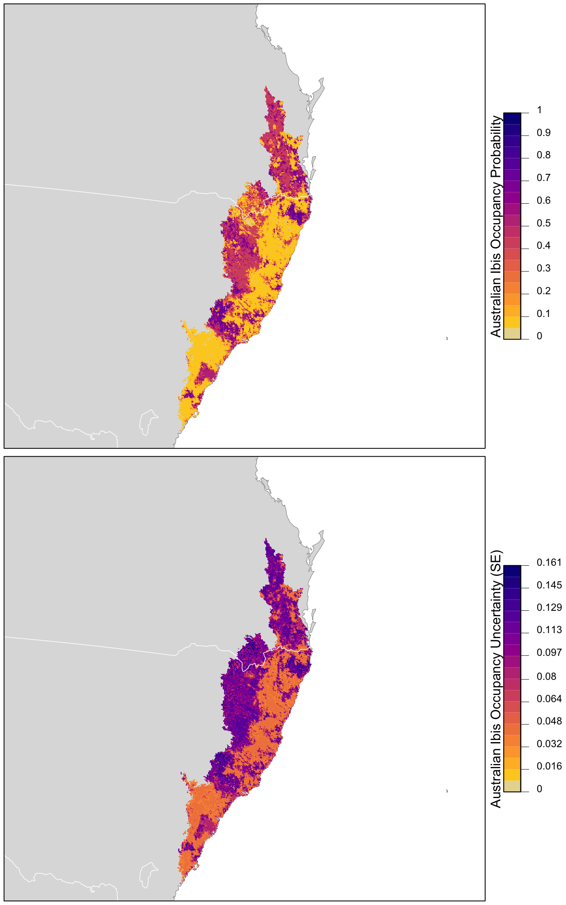

Lesson 12 Occupancy
In this lesson, we’ll use occupancy models to estimate the occupancy of occupancy of Australian Ibis on eBird checklists in September in the Temperate and Subtropical Forest CMZ, while explicitly accounting for imperfect detection. First, we’ll give a short presentation introducing occupancy modeling. The presentation can be downloaded in PowerPoint or PDF format, or viewed on SpeakerDeck.
Let’s start by loading the packages and data required for this lesson.
library(auk)
library(lubridate)
library(sf)
library(dggridR)
library(unmarked)
library(raster)
library(ebirdst)
library(MuMIn)
library(AICcmodavg)
library(fields)
library(tidyverse)
# resolve namespace conflicts
select <- dplyr::select
projection <- raster::projection
set.seed(1)
# ebird data
ebird <- read_csv("data/ebd_zf_sep_tst.csv") %>%
filter(common_name == "Australian Ibis") %>%
mutate(year = year(observation_date),
# occupancy modeling requires an integer response
species_observed = as.integer(species_observed))
# modis land cover covariates
habitat <- read_csv("data/pland-elev_location-year.csv") %>%
mutate(year = as.integer(year))
# combine ebird and modis data
ebird_habitat <- inner_join(ebird, habitat, by = c("locality_id", "year"))
# prediction surface
pred_surface <- read_csv("data/pland-elev_prediction-surface.csv")
# latest year of landcover data
max_lc_year <- pred_surface$year[1]
r <- raster("data/prediction-surface.tif")
# load gis data for making maps
map_proj <- st_crs(3577)
ne_land <- read_sf("data/gis-data.gpkg", "ne_country") %>%
st_transform(crs = map_proj) %>%
st_geometry()
cmz <- read_sf("data/gis-data.gpkg", "cmz") %>%
filter(cmz_name == "Eastern Australia Temperate and Subtropical forests") %>%
st_transform(crs = map_proj) %>%
st_geometry()
ne_state_lines <- read_sf("data/gis-data.gpkg", "ne_state_lines") %>%
st_transform(crs = map_proj) %>%
st_geometry()12.1 Data preparation
Since we’ll be fitting a single-season occupancy models, we’ll need to start by focusing on observations from September of a single year, in this case the most recent year for which we have data. At this point, we also suggest subsetting the data to observations with 5 or fewer observers since there are few checklists with more than 5 observers.
# filter to a single year of data
ebird_filtered <- filter(ebird_habitat,
number_observers <= 5,
year == max(year))As we learned in Part I of this workshop, we can use the auk function filter_repeat_visits() to extract just the eBird records that are suitable for occupancy modeling. Specifically, we want repeat visits to the same location by the same observer, so we’ll use latitude, longitude, and observer ID to define ‘sites’.
# subset for occupancy modeling
occ <- filter_repeat_visits(ebird_filtered,
min_obs = 2, max_obs = 10,
annual_closure = TRUE,
date_var = "observation_date",
site_vars = c("latitude", "longitude",
"observer_id"))Exercise
Suppose you define the temporal period of closure as week long blocks, rather than the whole month of September. Use filter_repeat_visits() to extract eBird data accordingly.
Exercise
Subsetting eBird data to just the observations suitable for occupancy modeling will inevitably reduce the amount of data. What proportion of observations remain after calling filter_repeat_visits()? How many unique sites do we have?
Next, we’ll use the auk function format_unmarked_occu() to put data in the specific format required by unmarked, as discussed in Part I. Prior knowledge of Australian Ibis, as well as the predictor importance results from the encounter rate lesson, inform what land cover variables we choose as occupancy covariates. The five effort variables should always be included as detection covariates, but we’ll also examine whether different habitat types affect the detection probability.
# format for unmarked, select occupancy and detection covariates
occ_wide <- format_unmarked_occu(occ,
site_id = "site",
response = "species_observed",
site_covs = c("n_observations",
"latitude", "longitude",
# % urban
"pland_13",
# % savanna
"pland_09",
# % evergreen broadleaf forest
"pland_02",
# % woody savanna
"pland_08"),
obs_covs = c("time_observations_started",
"duration_minutes",
"effort_distance_km",
"number_observers",
"protocol_type",
"pland_13",
"pland_09"))As described in lesson 7, we’ll use spatial subsampling to reduce spatial bias. However, here we’ll subsample at the level of ‘sites’ rather than observations.
# generate hexagonal grid with ~ 5 km betweeen cells
dggs <- dgconstruct(spacing = 5)
# get hexagonal cell id for each site
occ_wide_cell <- occ_wide %>%
mutate(cell = dgGEO_to_SEQNUM(dggs, longitude, latitude)$seqnum)
# sample one checklist per grid cell
occ_ss <- occ_wide_cell %>%
group_by(cell) %>%
sample_n(size = 1) %>%
ungroup() %>%
select(-cell)Finally, we’ll convert this data frame of observations into an unmarked object in order to fit occupancy models.
12.2 Occupancy modeling
Now that the data are prepared, we can fit a single-season occupancy model to using the occu() function, specifying the detection and occupancy covariates, respectively, via a double right-hand sided formula of the form ~ detection covariates ~ occupancy covariates.
# fit model
occ_model <- occu(~ time_observations_started +
duration_minutes +
effort_distance_km +
number_observers +
protocol_type +
pland_02 + pland_08
~ pland_13 + pland_09 + pland_02 + pland_08,
data = occ_um)
# look at the regression coefficients from the model
summary(occ_model)
#>
#> Call:
#> occu(formula = ~time_observations_started + duration_minutes +
#> effort_distance_km + number_observers + protocol_type + pland_02 +
#> pland_08 ~ pland_13 + pland_09 + pland_02 + pland_08, data = occ_um)
#>
#> Occupancy (logit-scale):
#> Estimate SE z P(>|z|)
#> (Intercept) -0.621 0.501 -1.240 0.21484
#> pland_13 0.911 0.644 1.416 0.15690
#> pland_09 0.420 0.831 0.506 0.61303
#> pland_02 -3.013 1.122 -2.687 0.00722
#> pland_08 12.563 5.675 2.214 0.02685
#>
#> Detection (logit-scale):
#> Estimate SE z P(>|z|)
#> (Intercept) -0.17286 0.66587 -0.2596 7.95e-01
#> time_observations_started -0.02826 0.04196 -0.6735 5.01e-01
#> duration_minutes 0.01648 0.00472 3.4936 4.76e-04
#> effort_distance_km 0.04264 0.16428 0.2595 7.95e-01
#> number_observers -0.38447 0.21758 -1.7670 7.72e-02
#> protocol_typeTraveling 0.61871 0.45763 1.3520 1.76e-01
#> pland_02 0.00581 1.11851 0.0052 9.96e-01
#> pland_08 -11.29335 2.34432 -4.8173 1.45e-06
#>
#> AIC: 468
#> Number of sites: 208
#> optim convergence code: 0
#> optim iterations: 66
#> Bootstrap iterations: 012.2.1 Assessment
The MacKenzie and Bailey [-@mackenzieAssessingFitSiteoccupancy2004] goodness-of-fit test can be used to assess the occupancy model fit. Note that to produce accurate results, this process requires simulating about 1,000 bootstrap samples, which can take a long time to run. For the sake of speed, if you want to run the below code, we suggest using nsim = 5.
#>
#> MacKenzie and Bailey goodness-of-fit for single-season occupancy model
#>
#> Chi-square statistic = 612
#> Number of bootstrap samples = 1000
#> P-value = 0.989
#>
#> Quantiles of bootstrapped statistics:
#> 0% 25% 50% 75% 100%
#> 451 1248 1609 2072 26914
#>
#> Estimate of c-hat = 0.3112.3 Prediction
Now we can estimate the distribution of Australian Ibis in the CMZ and produce a map. Recall that when we predicted encouter rate, we had to include effort variables in our prediction surface. We don’t need to do that here because the estimated occupancy doesn’t depend on the effort covariates, these only occur in the detection submodel. In addition, predict() can produce both predictions as well as estimates of the standard error.
# make prediction
occ_pred <- predict(occ_model,
newdata = as.data.frame(pred_surface),
type = "state")
# add to prediction surface
pred_occ <- bind_cols(pred_surface,
occ_prob = occ_pred$Predicted,
occ_se = occ_pred$SE) %>%
select(latitude, longitude, occ_prob, occ_se)Checkpoint
Predicting on the full prediction surface will typically take several minutes. As the above code runs, let’s take a short break.
Next, we want to plot these predictions. We’ll convert this data frame to spatial features using sf, then rasterize the points using the prediction surface raster template.
r_pred <- pred_occ %>%
# convert to spatial features
st_as_sf(coords = c("longitude", "latitude"), crs = 4326) %>%
st_transform(crs = projection(r)) %>%
# rasterize
rasterize(r)
r_pred <- r_pred[[c("occ_prob", "occ_se")]]Finally, we can map these predictions!
# project predictions
r_pred_proj <- projectRaster(r_pred, crs = map_proj$proj4string, method = "ngb")
par(mfrow = c(2, 1))
for (nm in names(r_pred)) {
r_plot <- r_pred_proj[[nm]]
par(mar = c(3.5, 0.25, 0.25, 0.25))
# set up plot area
plot(cmz, col = NA, border = NA)
plot(ne_land, col = "#dddddd", border = "#888888", lwd = 0.5, add = TRUE)
# occupancy probability or standard error
if (nm == "occ_prob") {
title <- "Australian Ibis Occupancy Probability"
brks <- seq(0, 1, length.out = 21)
lbl_brks <- seq(0, 1, length.out = 11) %>%
round(2)
} else {
title <- "Australian Ibis Occupancy Uncertainty (SE)"
mx <- ceiling(1000 * cellStats(r_plot, max)) / 1000
brks <- seq(0, mx, length.out = 21)
lbl_brks <- seq(0, mx, length.out = 11) %>%
round(2)
}
pal <- abundance_palette(length(brks) - 1)
plot(r_plot,
col = pal, breaks = brks,
maxpixels = ncell(r_plot),
legend = FALSE, add = TRUE)
# borders
plot(cmz, border = "#000000", col = NA, lwd = 1, add = TRUE)
plot(ne_state_lines, col = "#ffffff", lwd = 0.75, add = TRUE)
box()
# legend
par(new = TRUE, mar = c(0, 0, 0, 0))
image.plot(zlim = range(brks), legend.only = TRUE,
breaks = brks, col = pal,
smallplot = c(0.25, 0.75, 0.06, 0.09),
horizontal = TRUE,
axis.args = list(at = lbl_brks, labels = lbl_brks,
fg = "black", col.axis = "black",
cex.axis = 0.75, lwd.ticks = 0.5,
padj = -1.5),
legend.args = list(text = title,
side = 3, col = "black",
cex = 1, line = 0))
}
12.4 Model selection
So far, we’ve been using a global model that includes all of the covariates we believe will influence the occupancy and detection probabilities; however, a more thorough approach is to use model selection to compare and rank a set of candidate models, each containing different subsets of the covariates. We’ll use the dredge() function, which evaluates a set of candidate models generated by using different combinations of the terms in the global model. Since we know from prior experience that the effort covariates are almost always important, we’ll lock these variables in, and consider a candidate set consisting of all possible combinations of the ecological covariates in the occupancy submodel.
# get list of all possible terms, then subset to those we want to keep
det_terms <- getAllTerms(occ_model) %>%
# retain the detection submodel covariates
discard(str_detect, pattern = "psi")
# fit all possible combinations of the occupancy covariates
occ_dredge <- dredge(occ_model, fixed = det_terms)
# model comparison
select(occ_dredge, starts_with("psi(p"), df, AICc, delta, weight) %>%
mutate_all(~ round(., 3)) %>%
knitr::kable()| psi(pland_02) | psi(pland_08) | psi(pland_09) | psi(pland_13) | df | AICc | delta | weight |
|---|---|---|---|---|---|---|---|
| -3.56 | 11.06 | 11 | 468 | 0.000 | 0.329 | ||
| -3.18 | 12.63 | 0.733 | 12 | 468 | 0.365 | 0.274 | |
| -3.60 | 11.31 | -0.225 | 12 | 470 | 2.147 | 0.112 | |
| -3.01 | 12.56 | 0.420 | 0.911 | 13 | 470 | 2.383 | 0.100 |
| -2.90 | 10 | 471 | 3.014 | 0.073 | |||
| -2.67 | 0.382 | 11 | 472 | 4.680 | 0.032 | ||
| -2.89 | 0.106 | 11 | 473 | 5.218 | 0.024 | ||
| 11.71 | 1.075 | 11 | 474 | 6.323 | 0.014 | ||
| -2.43 | 0.568 | 0.635 | 12 | 474 | 6.415 | 0.013 | |
| 11.15 | 0.891 | 1.457 | 12 | 475 | 7.456 | 0.008 | |
| 8.19 | 10 | 476 | 8.348 | 0.005 | |||
| 9 | 476 | 8.358 | 0.005 | ||||
| 0.692 | 10 | 476 | 8.550 | 0.005 | |||
| 0.941 | 1.107 | 11 | 477 | 9.383 | 0.003 | ||
| 8.59 | -0.191 | 11 | 478 | 10.499 | 0.002 | ||
| 0.082 | 10 | 478 | 10.549 | 0.002 |
Tip
To determine which candidate model each row corresponds to, note that he columns beginning with psi( give the model coefficients for each of the habitat covariates in the occupancy submodel; missing values indicate that that covariate was not included in the given model.
The corrected Akaike Information Criterion (AICc) measures the performance of each model, relative to the other models in the candidate set, adjusting for the number of parameters. Lower values indicate models with a better fit to the data, penalizing for the number of parameters. Delta is the difference between the AICc values for the given model and that for the top model (i.e. the one with the lowest AICc). Finally, the AIC weight is a transformation of delta that can be interpreted as the likelihood that the given model is the most likely one of the candidate models to have generated the data.
There doesn’t appear to be a clear single model, or even a small set of models, that are most likely to have generated our data. Given this, we’ll average across the top models (those comprising 95% of the weights), weighted by AICc, to produce a model-averaged prediction.
# select models with the most suport for model averaging
occ_dredge_95 <- get.models(occ_dredge, subset = cumsum(weight) <= 0.95)
# average models based on model weights
occ_avg <- model.avg(occ_dredge_95, fit = TRUE)Making model-averaged predictions works in the same way as for making predictions from a single global model. However, it takes significantly more time to run, so we won’t run the below code or produce maps based on model-averaged predictions during the workshop, instead leaving it as an exercise.
#
occ_pred_avg <- predict(occ_avg,
newdata = as.data.frame(pred_surface),
type = "state")
# add to prediction surface
pred_occ_avg <- bind_cols(pred_surface,
occ_prob = occ_pred_avg$fit,
occ_se = occ_pred_avg$se.fit) %>%
select(latitude, longitude, occ_prob, occ_se)12.4.1 Detection model
A unique feature of occupancy models, is that we can investigate whether certain covariates influence detection, which wasn’t possible using the machine learning approach in lesson 11. We included evergreen broadleaf forest (pland_02) and woody savanna (pland_08) as detection covariates in the global model, and we can compare a set of models with and without these covariates to assess their importance.
# define occupancy model formula with only effort in detection submodel
det_mod <- ~ time_observations_started +
duration_minutes +
effort_distance_km +
number_observers +
protocol_type ~
pland_13 + pland_09 + pland_02 + pland_08
# create new formulae with landcover covariates added to the detection submodel
mods <- list(det_mod_null = det_mod,
det_mod_for = update.formula(det_mod, ~ . + pland_02 ~ .),
det_mod_ws = update.formula(det_mod, ~ . + pland_08 ~ .),
global = update.formula(det_mod,
~ . + pland_02 + pland_08 ~ .)) %>%
# fit candidate models
map(occu, data = occ_um)Now we can perform model selection on this set to compare the different candidate models.
mod_sel <- fitList(fits = mods) %>%
modSel()
mod_sel
#> nPars AIC delta AICwt cumltvWt
#> det_mod_ws 12 466.16 0.00 0.73060 0.73
#> global 13 468.16 2.00 0.26878 1.00
#> det_mod_null 11 481.39 15.22 0.00036 1.00
#> det_mod_for 12 482.08 15.91 0.00026 1.00From these results, it’s clear that including these habitat covariates (especially woody savanna) leads to an improvement in model performance, as shown by the AIC and AIC weights. Let’s look at the coefficients from the global model for these covariates to see how they’re impacting detection and occupancy.
coef(occ_model) %>%
enframe() %>%
filter(str_detect(name, "pland_"))
#> # A tibble: 6 x 2
#> name value
#> <chr> <dbl>
#> 1 psi(pland_13) 0.911
#> 2 psi(pland_09) 0.420
#> 3 psi(pland_02) -3.01
#> 4 psi(pland_08) 12.6
#> 5 p(pland_02) 0.00581
#> 6 p(pland_08) -11.3The psi() coefficients are from the occupancy submodel and the p() coefficients are from the detection submodel.
12.5 Exercises
Now that you’ve completed this lesson, try modifying your script to complete at least one of the following exercises:
Try sampling more than a single checklist per grid cell in the spatiotemporal sampling. How does that affect model fit and predictions?
What happens to the size of dataset if you only use stationary counts, or reduce the distance traveled to 1 km? How does it impact the results? How does the different input data affect your interpretation of the results?
What happens to the size of the dataset if you allow repeat visits to be by multiple observers? How does this impact the results.
Produce a map based on model averaged predictions. Note that making these predictions may take up to an hour.
Try estimating occupancy for one of the other species in the example data.